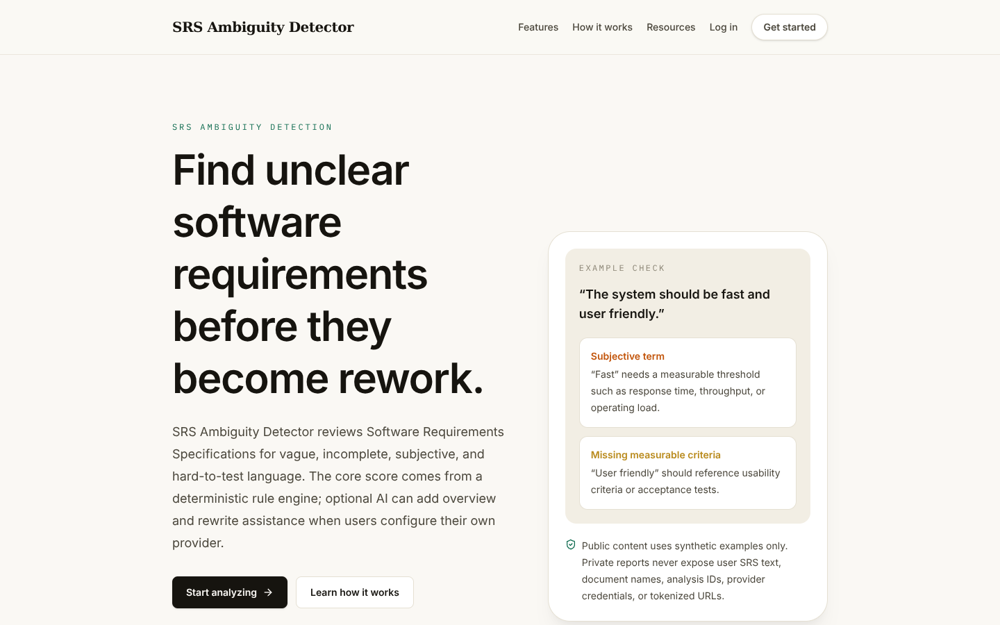
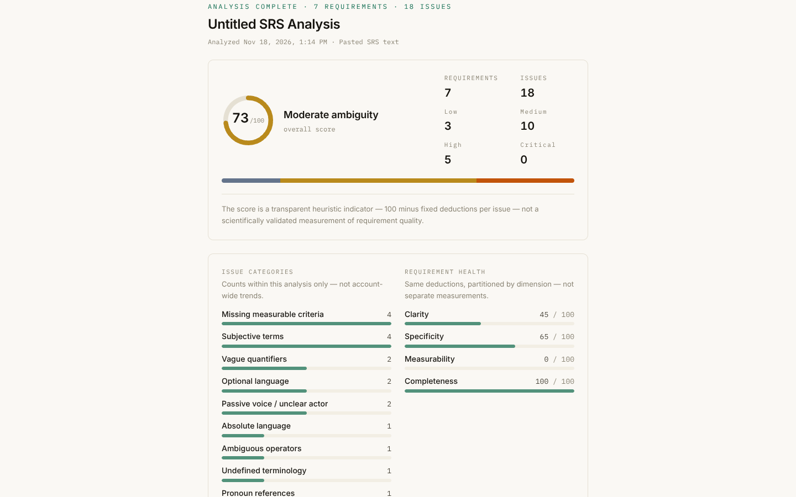
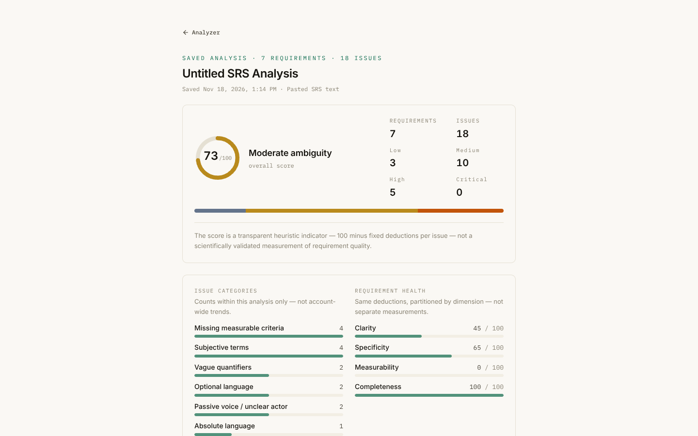
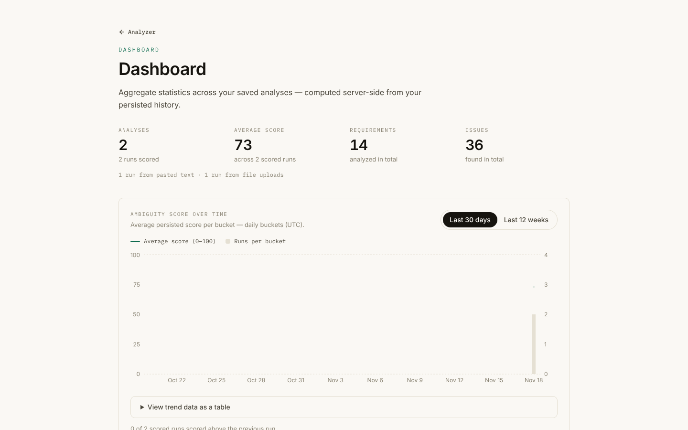
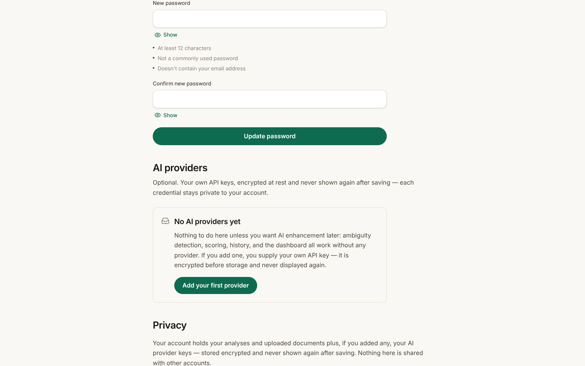

Figure 9.2: Analyser with sample SRS text entered
| S.NO | Student Name | Roll Number | Branch and Section |
|---|---|---|---|
| 1 | Ashish Kumar | 2301650100054 | Computer Science and Engineering (Section A) |
I hereby declare that the project work entitled “SRS AMBIGUITY DETECTOR”, submitted as a Synopsis of Startup and Entrepreneurial Activity Assessment for the degree of Bachelor of Technology in Computer Science and Engineering, is my original work carried out by me under the guidance of the concerned faculty Mr. Suraj Srivastava.
To the best of my knowledge and belief, the work presented in this report has not been submitted, either wholly or partly, for the award of any other degree or academic qualification. All sources of information and assistance used in the preparation of this project have been duly acknowledged wherever applicable. I accept responsibility for the accuracy and originality of the work presented in this report.
Name: Ashish Kumar
Roll No.: 2301650100054
Approved By:
Mr. Suraj Srivastava
Assistant Professor
Department of Computer Science and Engineering
Kanpur Institute of Technology, Kanpur
This is to certify that the project report entitled “SRS AMBIGUITY DETECTOR” has been prepared by Ashish Kumar, a student of B.Tech in Computer Science and Engineering (Seventh Semester), under the guidance of Mr. Suraj Srivastava, Assistant Professor, Department of Computer Science and Engineering, Kanpur Institute of Technology, Kanpur.
The work presented in this report is submitted as a Synopsis of Startup and Entrepreneurial Activity Assessment for the degree of Bachelor of Technology in Computer Science and Engineering. The project work has been carried out as per the academic requirements of the Department of Computer Science and Engineering, Kanpur Institute of Technology, Kanpur.
Student Name: Ashish Kumar
Roll No.: 2301650100054
Project Guide
Name: Mr. Suraj Srivastava
Designation: Assistant Professor
Department: CSE
Signature: ________________
Head of Department
Name: Mr. Rahul Singh
Designation: Head of Department
Department: CSE
Signature: ________________
I would like to express my sincere gratitude to Mr. Suraj Srivastava, Assistant Professor, Department of Computer Science and Engineering, Kanpur Institute of Technology, Kanpur, for his valuable guidance, support, and encouragement throughout the preparation of my project entitled “SRS Ambiguity Detector.”
I am thankful to the Head of the Department and all the faculty members of the Department of Computer Science and Engineering for providing the necessary academic support and resources to complete this project.
I would also like to thank my college for providing me with the opportunity to work on this project as part of the Startup and Entrepreneurial Activity Assessment. This project has helped me understand how a careful study of software requirements, combined with systematic software design, implementation and testing, can produce a practical tool that solves a real problem faced by software teams and can also be developed as a small technology startup idea.
Finally, I am grateful to my family and friends who supported and motivated me during the completion of this project.
Ashish Kumar
Roll No.: 2301650100054
B.Tech – Computer Science and Engineering
Kanpur Institute of Technology, Kanpur
The Software Requirements Specification (SRS) is the foundation on which a software system is designed, developed and tested. In practice, however, requirement statements are written in natural language and frequently contain vague words, subjective terms, undefined terminology, optional language and missing measurable criteria. Such ambiguous requirements are understood differently by different stakeholders, which leads to wrong implementation, repeated clarification, rework, cost overrun and defects that reach the testing phase. This project, SRS Ambiguity Detector, is a full-stack web application that automatically reviews SRS text and documents and reports requirement statements that may be ambiguous, incomplete or difficult to verify.
The application allows a registered user to paste requirement text or upload an SRS document in PDF, DOCX or TXT format. A deterministic rule-based detection engine — the authoritative analysis layer of the system — segments the input into individual requirements and examines each requirement with eleven detector categories, including vague quantifiers, subjective terms, missing measurable criteria, pronoun references, optional language, ambiguous operators, undefined terminology, absolute language, passive voice, missing constraints and incomplete requirements. Every finding is reported with the exact phrase that triggered it, its severity (Low, Medium, High or Critical), a reason, and a recommendation for improvement. A transparent scoring model starts from 100 and applies fixed deductions per issue (Low −5, Medium −10, High −15, Critical −20) to produce an ambiguity score, an ambiguity band and four requirement-health dimensions (measurability, specificity, clarity and completeness). An optional enhancement feature can additionally produce an overview and rewrite suggestions using the user’s own provider credentials, without ever changing the deterministic result. All analyses are saved in a PostgreSQL database, so the user can reopen reports, browse analysis history and view dashboard charts of ambiguity trends.
The system is developed using Next.js, React and TypeScript for the front end and Python with the FastAPI framework, SQLAlchemy and PostgreSQL for the back end, with authentication, email verification, document processing, privacy controls and production-oriented security measures such as Argon2id password hashing, HttpOnly session cookies, encrypted credential storage and rate limiting. The complete system was executed and verified: the automated test suites (591 back-end tests and 432 front-end tests, 1,023 tests in total) pass, and a live demonstration on a sample SRS produced a score of 73/100 (Moderate ambiguity) with 18 issues detected across 7 requirements. As a startup idea, the tool requires only modest cloud investment, follows a freemium model for students, professionals and institutions, and demonstrates how software engineering methods can convert a well-identified problem into a working, useful product.
Declaration
Certificate
Acknowledgement
Abstract
1. Introduction
2. Problem Statement and Motivation
3. Objectives and Scope
4. Literature and Background Study
5. Existing and Proposed System
6. Feasibility Study and Requirement Analysis
7. System Architecture and UML Design
8. Database Design
9. Implementation, Deployment and Maintenance
10. Security, Privacy, Testing and Quality Assurance
11. Project Evaluation and Future Enhancements
12. Conclusion
13. References
Every software project begins with requirements. The Software Requirements Specification (SRS) document records what the system shall do, under which conditions, and to what level of quality. Developers design and code from this document, testers derive test cases from it, managers estimate cost and schedule from it, and the client accepts the final product against it. Because so much depends on this one document, the quality of the language used in it directly affects the quality of the software that is finally delivered.
In real projects, requirements are written in natural language by people with different backgrounds. Natural language is expressive, but it is also imprecise. A sentence such as “The system shall respond quickly” appears simple, yet it does not state how quickly, under what load, or measured how. Another sentence such as “It shall generate reports as needed” leaves the reader guessing what “it” refers to and who decides what is “needed”. Studies of software failure repeatedly show that defects introduced during the requirements phase are the most expensive to repair, because they are discovered late — often during testing or after delivery — when design, code and test cases built upon the wrong interpretation must all be changed.
Ambiguity cannot be removed from natural language completely, but a large part of it follows recognisable patterns: vague quantity words (“many”, “several”), subjective quality words (“fast”, “user-friendly”), optional wording (“may”, “if possible”), absolutes (“always”, “never”), pronouns with unclear references, and performance claims without numbers. Because these patterns are systematic, they can be detected automatically by a program. Automation does not replace the judgement of a requirements analyst; it gives the analyst an early, consistent and tireless first review, so that human effort is spent on decisions rather than on searching for careless wording.
SRS Ambiguity Detector is a web-based application that reviews SRS text and documents and reports requirement statements that may be ambiguous, incomplete or difficult to verify. The user registers and logs in, then either pastes requirement text directly into the analyser or uploads an SRS document in PDF, DOCX or TXT format. The system segments the input into individual requirements, applies a deterministic rule-based detection engine of eleven ambiguity categories to every requirement, and presents a report containing an overall ambiguity score, severity counts, category-wise issue distribution, four requirement-health dimensions, and a requirement-by-requirement list of findings. Each finding highlights the exact phrase that was flagged and explains why it was flagged and how it can be improved.
All analyses are stored in a PostgreSQL database under the user’s account. The user can reopen any saved report, search and filter the analysis history, and view a dashboard with aggregate statistics and charts. The system also provides an optional enhancement feature: if the user saves credentials of a supported external AI service in an encrypted vault, the tool can request an overview summary and rewrite suggestions for flagged requirements. This enhancement is strictly optional and additive — the detection, scoring and report are always produced by the deterministic engine and never depend on any external service. The application is responsive and works on desktop, tablet and mobile browsers.
This report is organised as follows. Chapter 1 introduces the background and the project. Chapter 2 states the problem and the motivation, identifies the stakeholders and defines success criteria and expected outcomes. Chapter 3 records the objectives and the scope of the work. Chapter 4 reviews the relevant literature and background. Chapter 5 compares existing practice with the proposed system and presents advantages, risks and the business model. Chapter 6 studies feasibility and analyses the functional and non-functional requirements. Chapter 7 describes the system architecture and the UML design. Chapter 8 presents the database design. Chapter 9 explains the implementation, deployment and maintenance, together with output screens of the working application. Chapter 10 covers security, privacy, testing and quality assurance. Chapter 11 evaluates the project and lists future enhancements. Chapter 12 concludes the report, and Chapter 13 lists the references.
The scope of this project includes a responsive web application in which a registered and verified user can paste requirement text (up to 200,000 characters) or upload one SRS document in PDF, DOCX or TXT format (up to 10 MB), run a deterministic ambiguity analysis, and view the score, issue categories, health dimensions and requirement-level findings. It includes account management (registration, email verification, login, logout, password change and reset, account deletion), saved analysis reports, paginated history with search, filter and sorting, a statistics dashboard, profile and privacy settings including data export and purge, and optional enhancement through user-configured service providers. The system is designed primarily for students, requirements analysts, developers, testers and small software teams who prepare or review SRS documents in English. The detailed inclusions and exclusions are recorded in Chapter 3.
Software Requirements Specifications are written in natural language and therefore commonly contain vague, subjective, incomplete and unverifiable statements. Phrases such as “fast response”, “many users”, “as needed”, “user-friendly” and “shall be processed” do not define measurable behaviour. Different stakeholders interpret the same statement in different ways, so the system that is designed, coded and tested may not be the system that was actually wanted. At present, detecting such statements depends almost entirely on slow manual reading, which is inconsistent and does not scale to long documents. There is a need for an automated, explainable and repeatable tool that performs a first-level review of an SRS, pinpoints the exact phrases that create ambiguity, explains the problem, suggests an improvement, and summarises document quality in a score that can be tracked.
The motivation for this project came from observing, during academic software engineering work, how much time is spent arguing about the meaning of requirement sentences that a careful first review could have corrected in minutes. Most ambiguity in requirements is not deep or philosophical; it is created by a limited set of careless wording patterns that repeat from document to document. If those patterns are known, a program can find them reliably, tirelessly and in seconds. A deterministic rule-based approach was chosen deliberately: its decisions can be explained phrase by phrase, its scoring is transparent and repeatable, and it works without depending on any external service. Building the solution as a complete web product also provided the opportunity to practise the full process of developing, testing and presenting a real software system, and to examine it as a small startup idea under this assessment.
| Stakeholder | Interest in the System | Benefit Expected |
|---|---|---|
| Business / Requirements Analyst | Writes and reviews the SRS before it is approved | Faster self-review; concrete suggestions to improve each weak requirement |
| Software Developer | Implements the requirements | Clearer requirements; fewer wrong assumptions and less rework |
| Tester / QA Engineer | Derives test cases and acceptance criteria | Unverifiable statements are highlighted before test design begins |
| Project Manager | Estimates effort, schedule and risk | Score and trends give an early indication of document quality and risk |
| Client / Product Owner | Approves what will be built | A shared, objective view of requirement quality before sign-off |
| Students and Faculty | Learn software engineering and requirements writing | Practical feedback on SRS documents prepared in coursework |
| System Administrator | Operates and maintains the deployed service | Documented deployment, monitoring and maintenance procedures |
| Deliverable | Description |
|---|---|
| Web application | Complete front-end and back-end source code of the SRS Ambiguity Detector |
| Database schema and migrations | PostgreSQL schema with versioned migration scripts |
| Automated test suites | Back-end (pytest) and front-end (Vitest) test suites with passing results |
| Project documentation | Architecture, database schema, API, security, detection-engine, deployment and user documentation |
| Output screenshots | Screenshots captured from the actual running application (Chapter 9) |
| Synopsis report | This document, prepared for the Startup and Entrepreneurial Activity Assessment |
The Software Requirements Specification has been studied for decades. The IEEE Std 830-1998, IEEE Recommended Practice for Software Requirements Specifications, states that a good SRS should be correct, unambiguous, complete, consistent, ranked for importance and/or stability, verifiable, modifiable and traceable [1]. Its successor, ISO/IEC/IEEE 29148:2018, continues the same line and requires that each requirement be singular, unambiguous, complete, verifiable and conforming [2]. Of all these characteristics, unambiguous is the one most directly connected with language: an SRS is unambiguous if every requirement in it has only one interpretation. Standard textbooks repeat the point — Wiegers and Beatty insist that requirements must be written so that every reader arrives at the same understanding, and Sommerville lists ambiguity among the principal causes of requirements problems [7][8]. The present project takes this classical quality characteristic and turns it into an automatic check.
Berry and Kamsties, in their widely cited study of ambiguity in requirements specification, show that ambiguity enters natural-language requirements in several forms [3]. Lexical ambiguity arises when a word has more than one meaning. Syntactic ambiguity arises when a sentence can be parsed in more than one way, as with careless use of “and/or”. Semantic and scope ambiguity arise when quantifiers and modifiers do not make clear how much or to what they apply (“several users”, “all reports”). Referential ambiguity arises when pronouns such as “it” or “they” have no clear antecedent. To these classical forms, practical requirements writing adds further weaknesses that are not ambiguity in the strict linguistic sense but have the same effect: subjective words (“fast”, “user-friendly”), optional wording (“may”, “if possible”), absolutes (“always”, “never”), passive constructions that hide the responsible actor (“shall be approved”), and claims that carry no measurable criterion, so that nobody can verify whether the finished system satisfies them. The eleven detectors of the proposed system were selected to cover these practical categories (Chapter 7 and Chapter 9).
The idea of detecting weak requirement language automatically is established in the literature under the name requirements smells. Femmer and co-authors define a requirements smell as an indicator of a quality violation in a requirements artifact that can be detected with lightweight, static analysis, and they demonstrate that such smells — subjective language, ambiguous quantifiers, superlatives and similar patterns — can be found automatically and help rapid quality assurance [4]. Earlier, the QuARS (Quality Analyzer of Requirements Specification) tool developed at ISTI-CNR applied natural-language processing to evaluate ambiguity, completeness and consistency of requirements documents [5], and NASA’s Automated Requirement Measurement (ARM) tool measured requirement quality indicators in large specification documents [6]. These works establish two facts on which the present project is built: first, a large share of requirement weakness is pattern-based and therefore machine-detectable; second, automatic findings are review aids that must remain explainable to the analyst.
The study shows a clear gap: there is no lightweight, freely usable web tool that (i) checks an SRS against a defined set of ambiguity categories, (ii) explains every finding at the exact phrase with a reason and a remedy, (iii) expresses document quality through a transparent, reproducible score, (iv) accepts the document formats actually used (PDF, DOCX, TXT), (v) preserves a private history of analyses for registered users, and (vi) gives deterministic results that do not change between runs. The proposed system is designed to fill exactly this gap, while keeping an optional, user-controlled enhancement for those who want generative suggestions in addition to the deterministic findings.
In the existing practice followed by most students and small teams, an SRS is written in a word processor and reviewed manually. One or two reviewers read the document, mark doubtful sentences in comments, and discuss them in a meeting. There is no fixed checklist of ambiguity patterns, no measurement of overall quality, and no record of how the document improved between drafts. Where any tool support exists, it is either a generic grammar checker that does not understand requirements, or an enterprise requirements suite whose licence cost and administration effort put it out of reach. Confidential documents reviewed through consumer chatbot websites additionally raise privacy concerns, and the comments obtained are not reproducible.
The proposed system, SRS Ambiguity Detector, is a full-stack web application that performs the first-level review automatically and consistently. Its working is as follows. A registered user pastes SRS text or uploads a PDF, DOCX or TXT document. The input is normalised and segmented deterministically into individual requirements. Eleven rule-based detectors examine every requirement and record findings with the matched phrase, character offsets, severity, reason and recommendation. Duplicate findings are removed by fixed rules. Each requirement starts with 100 points and loses fixed points per issue (Low 5, Medium 10, High 15, Critical 20); the analysis score is the mean of requirement scores, presented with an ambiguity band (Low, Moderate, High, Very High) and four health dimensions — measurability, specificity, clarity and completeness. The report is saved to PostgreSQL, appears in the user’s history and dashboard, and can be reopened at any time. If the user has stored credentials of a supported provider, an optional enhancement can add an overview and rewrite suggestions, clearly disclosed as such; the deterministic findings remain the authoritative result in all cases.
| Aspect | Existing System | Proposed System |
|---|---|---|
| Review method | Manual reading by one or two reviewers | Automatic rule-based review of the whole document in seconds |
| Consistency | Depends on reviewer’s attention and experience | Same checks applied uniformly to every requirement |
| Findings | General comments in margins or meetings | Exact phrase highlighted, with category, severity, reason and recommendation |
| Quality measurement | None; improvement between drafts is not visible | Score out of 100, ambiguity band and four health dimensions |
| Input formats | Whatever the reviewer can open manually | Pasted text plus PDF, DOCX and TXT upload with text extraction |
| Record keeping | Scattered document versions and comments | Saved reports, searchable history and dashboard trends per user |
| Availability and cost | Enterprise tools costly; manual effort recurring | Web application; free tier possible on low-cost cloud hosting |
| Privacy | Documents often pasted into third-party consumer services | Private accounts; documents and keys stored under the user’s own account, encrypted where sensitive |
| Result reproducibility | Different reviewers give different comments | Deterministic engine: same input always gives the same findings and score |
| Risk | Description |
|---|---|
| False positives | A flagged phrase may be acceptable in a particular context, which may irritate users. |
| False negatives | Deep semantic ambiguity that needs domain knowledge cannot be detected by rules. |
| Over-trust in the score | Users may treat the heuristic score as a certification of document quality. |
| Document parsing limits | Scanned PDFs contain no extractable text; complex layouts may extract imperfectly. |
| Data protection duty | Uploaded SRS documents may be confidential; a breach would harm users and reputation. |
| External service dependency | The optional enhancement depends on third-party provider availability and pricing. |
| Risk | Mitigation Adopted |
|---|---|
| False positives | Findings are worded as “may indicate ambiguity”; reason and context are always shown so the user can judge. |
| False negatives | The limitation is disclosed in the product and in this report; the tool is positioned as a first-level review aid. |
| Over-trust in the score | The report itself states that the score is a heuristic indicator, not a certification of SRS quality. |
| Document parsing limits | File type, size and content are validated; extraction limits and unsupported cases are reported clearly to the user. |
| Data protection duty | Verified accounts, owner-wise data isolation, encryption of stored credentials, secure cookies, rate limiting, data export and complete deletion facilities (Chapter 10). |
| External service dependency | The deterministic engine is the authoritative layer; enhancement failure never blocks or changes the core result. |
For the purpose of this startup assessment, the project is viewed as an early-stage software-as-a-service (SaaS) product named SRS Ambiguity Detector, aimed at students, individual professionals and institutions that prepare SRS documents.
| Item | Details |
|---|---|
| Startup Name | SRS Ambiguity Detector |
| Target Customers | Computer-science students and faculty; requirements analysts, developers and QA engineers in small and medium software teams; training institutes |
| Investment | Very low: open-source technology stack; free/low-cost cloud tiers for hosting, database and storage; optional domain name |
| Income Source | Freemium model — free tier for individuals (deterministic analysis); paid Pro plan for higher limits and enhancement credits; Institution plan with annual licence for colleges and companies |
| Marketing | College demonstrations and workshops, GitHub project page, LinkedIn and developer-community posts, demonstration video, word of mouth through faculty and student networks |
| Main Benefit | Users obtain an instant, explainable quality review of an SRS and a measurable score, improving documents before development begins |
As a worked example, if 100 users subscribe to a Pro plan of ₹299 per month, the monthly revenue is ₹29,900 against hosting expenses that remain within a few thousand rupees at this scale; an Institution plan of ₹24,999 per year for a college covers the remaining operating cost with a small number of customers. The marketing strategy is to begin with the academic community — free use for students, live demonstrations in software-engineering classes, and sharing of the public project page — and then approach small software firms and training institutes that prepare SRS documents regularly. Because the core engine runs without any paid external service, the cost of serving a free user is minimal, which keeps the freemium model practical.
The system is built entirely with mature, open-source technologies that are well documented and widely used in industry: Next.js with React and TypeScript for the front end; Python with FastAPI, Pydantic and SQLAlchemy for the back end; PostgreSQL as the database; and Alembic for schema migrations. The detection engine needs no specialised hardware or paid library — it is a set of deterministic text-processing rules that run on an ordinary server. Document extraction uses established open-source parsers for PDF and DOCX. All components were installed, executed and tested on a normal development computer, and the production topology (front end on a managed web host, back end on a Python service host, managed PostgreSQL) uses standard services. The project is therefore technically feasible, and it has in fact been implemented and verified as described in Chapters 9 and 10.
| Cost Item | Estimate |
|---|---|
| Development tools and software | ₹0 — all tools and libraries are free and open source |
| Development hardware | ₹0 — existing personal computer used |
| Front-end hosting | ₹0 on the free tier of a managed host (for example Vercel) |
| Back-end hosting | ₹0 free tier to about ₹800/month on a starter Python service host |
| PostgreSQL database and file storage | ₹0 on the free tier of a managed provider (for example Supabase) at academic scale |
| Domain name (optional) | About ₹700–₹1,000 per year |
| Email delivery | Free tier sufficient at this scale |
The total cost of developing and initially operating the system is negligible, while the benefit — hours of manual review saved on every SRS document — is immediate. As usage grows, hosting cost rises slowly and can be recovered through the Pro and Institution plans described in Section 5.7. The project is therefore economically feasible.
The system operates through an ordinary web browser and needs no installation by the user. Its screens follow a simple workflow — register, verify, log in, paste or upload, analyse, read the report — that was designed to be understandable without training. The report language is deliberately plain: every finding states what was found, why it matters and what to do. Operation by the administrator consists of standard tasks (deploying updates, applying database migrations, reviewing error reports), all documented in the project’s deployment documentation. The system is therefore operationally feasible for its intended users.
The work was planned and executed module by module within one academic semester, alongside regular coursework. An indicative work plan is given below.
| Work Package | Indicative Period | Main Activities |
|---|---|---|
| Problem study and planning | Weeks 1–2 | Problem identification, literature study, scope and requirement finalisation |
| Design | Weeks 3–4 | Architecture, UML diagrams, database schema, interface design |
| Back-end development | Weeks 5–8 | Database, authentication, segmentation, detection engine, scoring, document processing, APIs |
| Front-end development | Weeks 8–11 | Public pages, analyser, report, history, dashboard and settings interfaces |
| Testing and correction | Weeks 11–13 | Automated test suites, end-to-end verification, defect fixing |
| Documentation and submission | Weeks 13–14 | Project documentation, screenshots, synopsis and presentation preparation |
The system processes documents that users themselves upload and provides them the facility to export or permanently delete their data, which supports responsible data handling in line with the principles of India’s Digital Personal Data Protection Act, 2023. User credentials for external services are stored only in encrypted form and are never displayed after saving. The software is built from open-source components used under their respective licences, and no copyrighted content is reproduced by the system. Findings are presented honestly as heuristic indicators rather than guarantees, which keeps the tool ethically sound. The project is therefore legally and ethically feasible.
| ID | Requirement | Description |
|---|---|---|
| FR-01 | User registration | The system shall allow a visitor to register with name, email and password, with validation of all fields. |
| FR-02 | Email verification | The system shall verify the user’s email through a time-limited verification link before the account is used. |
| FR-03 | Login and logout | The system shall authenticate verified users and maintain a secure session using HttpOnly cookies with refresh-token rotation. |
| FR-04 | Password reset and change | The system shall provide forgot-password reset through email and password change from settings. |
| FR-05 | Text analysis | The system shall accept pasted SRS text up to 200,000 characters and analyse it. |
| FR-06 | Document analysis | The system shall accept one PDF, DOCX or TXT document up to 10 MB, extract its text and analyse it. |
| FR-07 | Requirement segmentation | The system shall split the input deterministically into ordered individual requirements. |
| FR-08 | Ambiguity detection | The system shall examine every requirement with eleven detector categories and record phrase, offsets, severity, reason and recommendation for each finding. |
| FR-09 | Scoring | The system shall compute requirement and analysis scores, an ambiguity band and four health dimensions by a fixed published formula. |
| FR-10 | Analysis report | The system shall display a report with score, severity and category summaries, health dimensions and requirement-wise findings. |
| FR-11 | History | The system shall list the user’s analyses with search, filter, sorting, pagination and deletion. |
| FR-12 | Dashboard | The system shall show aggregate statistics, trends, severity and category charts and recent analyses. |
| FR-13 | Provider credential management | The system shall let the user save, test and delete credentials of supported providers, stored encrypted and never shown again. |
| FR-14 | Optional enhancement | Where a provider is configured, the system shall offer an overview and rewrite suggestions, clearly disclosed, without changing deterministic findings. |
| FR-15 | Privacy lifecycle | The system shall provide profile management, data export, history purge, retention preference and complete account deletion. |
| ID | Requirement | Description |
|---|---|---|
| NFR-01 | Performance | Analysis of a typical SRS shall complete within a few seconds; ordinary pages shall load promptly on a normal connection. |
| NFR-02 | Security | Passwords shall be stored only as Argon2id hashes; sessions shall use HttpOnly cookies; stored provider credentials shall be encrypted; access to every resource shall be restricted to its owner. |
| NFR-03 | Privacy | User documents and analysis content shall not be exposed to other users or written to logs; export and deletion shall be available to the user. |
| NFR-04 | Usability | The interface shall be usable without training and shall work on desktop, tablet and mobile screens. |
| NFR-05 | Reliability and determinism | The same input shall always produce the same findings and score; failure of the optional enhancement shall not affect the core result. |
| NFR-06 | Maintainability | The code shall follow a layered structure (interface, service, repository, model) with automated tests, so defects can be located and corrected safely. |
| NFR-07 | Scalability | The stateless back end and managed PostgreSQL shall permit additional server instances as usage grows. |
| NFR-08 | Availability | The deployed service shall target normal business-hours availability appropriate to its hosting tier, with health-check endpoints for monitoring. |
| Role | Permissions and Activities |
|---|---|
| Visitor (Guest) | Views public pages (home, features, how it works, resources); registers for an account |
| Registered User | Verifies email, logs in, analyses text and documents, views reports, history and dashboard, manages profile, provider credentials and privacy settings, deletes own data and account |
| Administrator / Operator | Deploys and configures the service, applies migrations, monitors health and errors, manages hosting and backups; has no access to user passwords or decrypted credentials |
The system follows a three-tier, layered architecture. The presentation tier is a Next.js (React + TypeScript) web application that renders public pages, the analyser, reports, history, dashboard and settings, and communicates with the back end only through a versioned REST API. The application tier is a FastAPI (Python) service organised in layers — API routers receive requests, a service layer executes business logic, and a repository layer is the only place that talks to the database through SQLAlchemy. Within this tier, the deterministic detection engine (segmentation, eleven detectors, deduplication, scoring) performs the complete analysis without any external dependency. The data tier is PostgreSQL, which stores users, analyses, requirements, issues, documents and credentials, together with a document storage component (local disk in development, managed object storage in production). External services are used only at the edges: an email service for verification and reset messages, a CAPTCHA service for abuse protection, error monitoring, and — only when the user configures it — external AI providers for the optional enhancement. Figure 7.1 shows the overall architecture.
| Module | Responsibility |
|---|---|
| Authentication module | Registration, email verification, login/logout, refresh-token rotation with reuse detection, password reset and change, account deletion |
| SRS input module | Authenticated analyser for pasted requirement text with input-size limits |
| Document processing module | PDF/DOCX/TXT upload, type/size/magic-byte validation, text extraction, storage and deletion |
| Segmentation module | Deterministic splitting of input into ordered requirement statements with identifiers and section paths |
| Detection engine | Eleven rule-based detectors, finding deduplication, scoring, bands and health dimensions |
| Report module | Saved analysis report with score summary, category and health charts, requirement cards and issue explanations |
| History module | Paginated list of the user’s analyses with search, filter, sorting and deletion |
| Dashboard module | Aggregate statistics, ambiguity trends, severity and category distribution, recent analyses |
| Credential vault module | Encrypted storage, testing and deletion of the user’s own provider credentials |
| Enhancement module | Optional overview and rewrite suggestions through configured providers, with fallback and clear disclosure |
| Settings and privacy module | Profile, password, provider management, data export, history purge, retention preference, account deletion |
The use case diagram (Figure 7.2) shows the two human actors. A Visitor can view public pages and register. A Registered User performs all working use cases: verifying email, logging in, analysing text, uploading documents, viewing reports, history and dashboard, managing provider credentials and privacy settings. Running ambiguity detection is included by both analysis use cases; the optional enhancement extends the report when a provider is configured.
The activity diagram (Figure 7.3) shows the flow of the main activity — analysing an SRS — from login to the final report, including the choice between pasted text and document upload, and the optional enhancement branch.
Figure 7.4 is the context-level (Level 0) DFD: the whole system is one process exchanging data with the user, the email service and, optionally, an external provider. Figure 7.5 decomposes it into the five main processes and the two principal data stores.
The ER diagram (Figure 7.6) shows the ten database entities and their relationships. Every user-owned entity carries the owner’s identifier, so one user’s data is structurally separated from another’s. The detailed schema is presented in Chapter 8.
The sequence diagram (Figure 7.7) traces one text-analysis request through the browser, API, service layer, detection engine and database, and back to the rendered report.
The system uses PostgreSQL (version 16 compatible) as its database. The schema is implemented through SQLAlchemy models and is created and evolved only through versioned Alembic migrations; no table is created informally. The design follows these principles:
| Column | Type | Constraints / Notes |
|---|---|---|
| id | UUID | Primary key |
| VARCHAR(320) | Unique, not null; stored lower-cased | |
| display_name | VARCHAR(100) | Nullable; shown in profile |
| password_hash | TEXT | Argon2id hash only; never a plain password |
| is_verified | BOOLEAN | Default false; true after email verification |
| is_active | BOOLEAN | Default true |
| last_login_at | TIMESTAMPTZ | Set at each successful login |
| created_at / updated_at | TIMESTAMPTZ | Not null |
| Column | Type | Constraints / Notes |
|---|---|---|
| id | UUID | Primary key |
| owner_id | UUID | Foreign key to users, cascade delete |
| document_id | UUID | Foreign key to documents, null for pasted-text analyses |
| title | VARCHAR(200) | Auto-derived title of the analysis |
| source_type | VARCHAR(16) | CHECK: text / document |
| status | VARCHAR(16) | CHECK: segmented / analyzed / failed |
| source_text | TEXT | Normalised input retained with the analysis |
| score | SMALLINT | CHECK 0–100; null until scored |
| band | VARCHAR(16) | CHECK: low / moderate / high / very_high |
| score_breakdown | JSONB | Per-issue deductions for explainability |
| health | JSONB | Four health dimensions |
| requirements_count / issues_count | INTEGER | Denormalised counters for fast dashboard queries |
| ai_overview / ai_provider / ai_status | TEXT / VARCHAR | Optional enhancement outcome; status: ok / failed / skipped / unconfigured |
| Column | Type | Constraints / Notes |
|---|---|---|
| id | UUID | Primary key |
| owner_id / analysis_id | UUID | Foreign keys, cascade delete |
| position | INTEGER | Order in the document; unique per analysis |
| identifier | VARCHAR(32) | Detected identifier such as FR-001, when present |
| section | VARCHAR(200) | Heading-derived section path, when detectable |
| text | TEXT | Full requirement text |
| score | SMALLINT | CHECK 0–100; null until scored |
| severity | VARCHAR(16) | Worst severity among its issues; null when none |
| issues_count | INTEGER | Denormalised counter |
| suggested_rewrite | TEXT | Improvement suggestion, when produced |
| Column | Type | Constraints / Notes |
|---|---|---|
| id | UUID | Primary key |
| owner_id / analysis_id / requirement_id | UUID | Foreign keys, cascade delete |
| detector_id | VARCHAR(64) | Stable detector identifier, e.g. vague-quantifier |
| category | VARCHAR(64) | User-facing category name |
| severity | VARCHAR(16) | CHECK: low / medium / high / critical |
| phrase | TEXT | The exact matched phrase |
| start_offset / end_offset | INTEGER | Character offsets within the requirement; end after start (CHECK) |
| reason / recommendation | TEXT | Why it was flagged and how to improve it |
| ai_explanation | TEXT | Nullable; filled only by the optional enhancement |
| Table | Purpose and Key Columns |
|---|---|
| documents | Uploaded files: owner, original filename, verified file type, MIME type, byte size, SHA-256 digest, server-generated storage path, extracted character count, extraction status |
| ai_provider_credentials | User’s provider credentials: owner, provider name, label, encrypted key, key fingerprint and last four characters for display, enabled/default flags, fallback order, last test result. The plain key is never stored or returned. |
| refresh_tokens | Hashed refresh tokens with expiry and rotation/revocation information for session management |
| email_verification_tokens | Hashed, expiring tokens for email verification |
| password_reset_tokens | Hashed, expiring, single-use tokens for password reset |
| user_preferences | One row per user with privacy preferences such as history retention days |
The schema is in third normal form for its operational data: user facts are stored once in users, an analysis stores only its own attributes and foreign keys, requirements belong to exactly one analysis, and issues belong to exactly one requirement — no requirement text or user fact is repeated across rows. Two deliberate, documented exceptions are made for read performance: counters (requirements_count, issues_count, worst severity) are denormalised onto parent rows, and two JSONB columns (score_breakdown, health) store small derived summaries whose full detail remains available in the issues table. These derived values are always written in the same transaction as the findings they summarise, so they cannot disagree with the detailed data.
Integrity is protected at three levels: database constraints reject invalid rows even if application code errs; the repository layer always filters by owner, so cross-user access returns “not found”; and all writes pass through the service layer in transactions that commit or roll back as a unit. Passwords exist only as Argon2id hashes, session and reset tokens only as hashes, and provider keys only as ciphertext — a database leak therefore does not directly expose any usable secret. Deleting an analysis also removes its requirements and issues and purges an orphaned uploaded document from storage; deleting the account removes all of the user’s rows and files.
The system was developed incrementally, module by module, under Git version control, with automated tests written alongside each module and the full test suites executed before the work was accepted as complete. Approximately 45,000 lines of code, including automated tests, were produced. The technology stack is summarised below.
| Layer | Technologies Used |
|---|---|
| Front end | Next.js (App Router), React, TypeScript, Tailwind CSS, Recharts for charts, Motion for interface animation, Lucide icons |
| Back end | Python 3.11, FastAPI, Pydantic v2, Uvicorn ASGI server |
| Database access | SQLAlchemy 2.0 (async) with asyncpg driver; Alembic migrations |
| Database | PostgreSQL 16 (local server for development; managed PostgreSQL in production) |
| Security libraries | Argon2id password hashing, JSON Web Tokens (HS256), Fernet symmetric encryption for the credential vault, Cloudflare Turnstile CAPTCHA |
| Document processing | pypdf for PDF extraction, python-docx for DOCX extraction, multipart upload handling |
| Email service abstraction with a production mail adapter and a local console/file outbox for development | |
| Testing | pytest (back end, 591 tests against a real PostgreSQL), Vitest with Testing Library (front end, 432 tests) |
| Monitoring | Sentry error tracking with aggressive scrubbing of secrets and document content; structured request logging with request identifiers |
The detection engine is implemented as a registry of eleven independent detector functions. Each detector receives one requirement at a time and returns findings containing the detector identifier, category, severity, matched phrase, character offsets within the requirement, reason and recommendation. Because detectors are independent, a new category can be added by registering one more function without disturbing existing behaviour.
| Detector | What It Detects | Example (flagged phrase in quotes) |
|---|---|---|
| vague-quantifier | Quantity words such as “some”, “many”, “few”, “several” | “The system shall support several users.” |
| subjective-term | Subjective quality words such as “fast”, “quickly”, “easy”, “user-friendly”, “robust” | “The system shall respond quickly.” |
| missing-measurable-criteria | Performance or quality claims carrying no measurable criterion | “The system shall load reports efficiently.” |
| pronoun-reference | Pronouns or demonstratives whose referent may be unclear | “When the service receives a request, it validates it.” |
| optional-language | Words such as “may”, “might”, “could”, “if possible”, “as needed” | “The system may send an alert if possible.” |
| ambiguous-operator | “and/or”, “etc.”, “and so on”, ambiguous “or” | “The user can export PDF and/or CSV reports.” |
| undefined-terminology | Capitalised or domain-like terms that appear without definition | “The system shall notify Premium Users.” |
| absolute-language | Absolutes such as “always”, “never”, “all”, “every”, “instant” | “The system shall always be available.” |
| passive-actor | Passive constructions in which the responsible actor is unclear | “The report shall be approved before release.” |
| missing-constraint | Behaviour described without necessary constraints (limits, timing, format, retention) | “The system shall store audit logs.” |
| incomplete-requirement | Fragments, placeholders such as “TBD”, dangling modal verbs | “The system shall TBD.” |
Findings from all detectors are deduplicated deterministically: exact duplicates collapse to one; identical spans reported by two detectors keep the higher severity; overlapping but different spans are preserved. Scoring is deliberately transparent, with no hidden weighting:
| Score Range | Ambiguity Band |
|---|---|
| 80–100 | Low ambiguity |
| 60–79 | Moderate ambiguity |
| 40–59 | High ambiguity |
| 0–39 | Very high ambiguity |
The same deductions also feed four health dimensions, so every number in the report can be traced back to individual findings:
| Health Dimension | Contributing Detectors |
|---|---|
| Measurability | Subjective terms, missing measurable criteria |
| Specificity | Vague quantifiers, undefined terminology, absolute language |
| Clarity | Pronoun references, ambiguous operators, optional language, passive voice |
| Completeness | Missing constraints, incomplete requirements |
The back end exposes a versioned REST API under /api/v1. Routers validate requests through Pydantic schemas, services execute the business logic inside transactions, and repositories contain all database access. Typical endpoints are:
| API Area | Representative Endpoints |
|---|---|
| Authentication | POST /auth/register, /auth/login, /auth/logout, /auth/refresh, /auth/verify-email, /auth/forgot-password, /auth/reset-password, /auth/change-password; GET /auth/me; DELETE /auth/account |
| Analysis | POST /analysis (text), GET /analysis/{id}, DELETE /analysis/{id}, POST /analysis/{id}/retry-ai, list with search/filter/sort |
| Documents | POST /documents/upload, list, delete, signed download |
| Dashboard | GET /dashboard summary and trends |
| Provider credentials | Create, list (masked), test, set default, delete |
| Settings and privacy | Profile update, data export, history purge, retention preference |
| Health | GET /health and readiness checks for monitoring |
Uploaded documents pass through a validation chain — declared type, actual magic bytes, size streamed and counted (10 MB maximum), extraction time budget — before their text enters the same pipeline as pasted text. Stored files receive server-generated names; downloads are issued through short-lived signed links.
The front end is a Next.js application with public pages (home, features, how-it-works, resources) that are server-rendered for search visibility, and signed-in pages for the analyser, reports (/analysis/[id]), history, dashboard and settings. A typed API client centralises all communication with the back end; authentication state is held through secure cookies, never in browser storage. Charts are drawn with Recharts, and the layout is responsive across desktop, tablet and mobile widths, as the screenshots in Section 9.6 show. The production build compiles all 19 routes successfully with full TypeScript type checking.
The complete system was executed locally with a real PostgreSQL database, and a demonstration account was used to run the application end to end. The sample input consisted of seven deliberately weak requirements (FR-001 to FR-007, covering login, reporting, dashboard, payment, approval, performance and data handling). The observed result, which also appears in the screenshots, was:
| Measure | Observed Value |
|---|---|
| Requirements segmented | 7 |
| Total issues detected | 18 (Low 3, Medium 10, High 5, Critical 0) |
| Overall score and band | 73 / 100 — Moderate ambiguity |
| Issues by category | Missing measurable criteria 4; Subjective terms 4; Vague quantifiers 2; Optional language 2; Passive voice 2; Absolute language 1; Ambiguous operators 1; Undefined terminology 1; Pronoun references 1 |
| Health dimensions | Clarity 45/100; Specificity 65/100; Measurability 0/100; Completeness 100/100 |
| Document run (same content as TXT upload) | Identical result: 73/100, 18 issues — confirming both input paths share one pipeline |
Spot-checking the findings confirms their correctness: “log in quickly”, “respond fast” and “provide good performance” were flagged as performance claims without measurable criteria (High severity); “and/or” was flagged as an ambiguous operator; “always” as absolute language; “as needed” and “should” as optional language; and “be processed” / “be approved” as passive constructions with no named actor.
The following screenshots were captured from the actual running application using the demonstration account and the sample SRS of Section 9.5.








The production topology separates the two tiers. The Next.js front end is deployed on a managed web host (Vercel), and the FastAPI back end on a Python-capable service host, connected to managed PostgreSQL and object storage. The principal deployment steps are:
| Threat | Mitigation in the System |
|---|---|
| SQL injection | All database access through SQLAlchemy parameterised queries; no string-built SQL |
| Cross-site scripting (XSS) | React’s automatic output escaping; security headers; no raw HTML rendering of user content |
| Cross-site request forgery (CSRF) | Origin/Referer verification on cookie-authenticated mutating requests |
| Session hijacking / token theft | HttpOnly cookies, short access-token life, refresh rotation with reuse detection and family revocation |
| Credential stuffing and brute force | Per-endpoint rate limits, CAPTCHA support, Argon2id hashing cost |
| Insecure direct object reference | Owner-wise filtering in repositories and endpoints; foreign identifiers return 404 |
| Malicious file upload | Magic-byte and size validation, extraction time and size budgets, server-generated storage names, no execution of uploaded content |
| Secret leakage | Encrypted credential vault, hashed tokens, scrubbed logs and error reports, secrets only in environment variables |
| Abuse of costly operations | Separate rate-limit budgets for analysis, uploads and provider tests, with HTTP 429 responses |
Analyses, documents and credentials are private to their owner by construction. The user can view and export the data held about them, purge analysis history, set a history-retention preference, and delete the account completely — which removes all owned rows and stored files. Requirement text is never written to application logs or error reports. Where the optional enhancement is used, the report discloses that an external provider processed the content, and this happens only with credentials the user personally supplied. These facilities put the privacy lifecycle under the user’s control.
Testing was carried out at four levels. Unit tests cover each detector, the scoring formula, deduplication and segmentation against fixed examples, including a curated corpus of sample requirements with expected findings. Integration tests run the API and services against a real PostgreSQL database (never a substitute), covering authentication flows, analysis persistence, document processing, ownership isolation, the credential vault and privacy operations. Interface tests exercise the front-end components and pages with Vitest and Testing Library. System testing was performed by executing the complete application — database, back end and front end — and running the demonstration of Section 9.5 through the browser, from registration and email verification to text analysis, document analysis, history and dashboard.
| Verification Activity | Result |
|---|---|
| Back-end test suite (pytest, real PostgreSQL) | 591 tests passed |
| Front-end test suite (Vitest, 53 test files) | 432 tests passed |
| Total automated tests | 1,023 passed, 0 failed |
| Database migrations (6 revisions) | Applied successfully; 10 application tables created |
| Production front-end build (with type checking) | Successful; 19 routes generated |
| End-to-end demonstration (browser, live system) | Text and document analyses both scored 73/100 with 18 issues on the sample SRS |
| ID | Module | Test Case | Expected Result | Status |
|---|---|---|---|---|
| TC-01 | Registration | Register with valid name, email and password | Account created in unverified state; verification email issued | Pass |
| TC-02 | Registration | Register with a password containing the email address | Rejected as a weak password | Pass |
| TC-03 | Email verification | Submit a valid verification token | Account marked verified and login permitted | Pass |
| TC-04 | Detection | Analyse “The system shall support several users.” | Vague-quantifier finding on “several” with reason and recommendation | Pass |
| TC-05 | Scoring | Analyse the seven-requirement sample SRS | Score 73/100, Moderate band, 18 issues (3 Low, 10 Medium, 5 High) | Pass |
| TC-06 | Document upload | Upload the sample SRS as a TXT file | Text extracted and analysed with the same result as pasted text | Pass |
| TC-07 | Document upload | Upload an oversized or wrong-type file | Rejected with a clear validation error; nothing stored | Pass |
| TC-08 | Ownership | User B requests User A’s analysis by its identifier | HTTP 404; no data of User A disclosed | Pass |
| TC-09 | Credential vault | Save a provider credential and list credentials | Stored encrypted; list shows only provider and last four characters | Pass |
| TC-10 | Session security | Reuse an already-rotated refresh token | Token family revoked; fresh login required | Pass |
| TC-11 | Rate limiting | Repeat authentication attempts beyond the configured budget | HTTP 429 with retry guidance | Pass |
| TC-12 | Dashboard | Open the dashboard after two analyses | Totals, severity mix and recent analyses match the saved data | Pass |
| Objective | Evaluation |
|---|---|
| Accept SRS text and documents | Achieved — paste-text and PDF/DOCX/TXT upload run through one pipeline; verified live with identical results |
| Deterministic segmentation and detection | Achieved — 11 detector categories with phrase-level findings, reasons and recommendations |
| Transparent scoring | Achieved — published deduction formula, ambiguity bands and four health dimensions; no hidden weighting |
| Accounts, persistence, history, dashboard | Achieved — verified accounts, PostgreSQL storage, searchable history and chart dashboard all working |
| Optional enhancement | Achieved — encrypted user-owned credentials, six supported providers, disclosure in reports; core result never depends on it |
| Security and privacy | Achieved — controls of Chapter 10 implemented and tested, including ownership isolation and complete deletion |
| Verification | Achieved — 1,023 automated tests pass; production build succeeds; live end-to-end demonstration completed |
Overall, the project meets the objectives recorded in Chapter 3. Its strongest qualities are the explainability of every finding, the reproducibility of the deterministic engine, and the completeness of the surrounding product, which makes it usable as a real working tool rather than a demonstration of a single algorithm.
This project set out to solve a practical problem of software engineering: requirement statements written in natural language are frequently vague, subjective, incomplete or unverifiable, and the resulting misunderstandings cause rework and defects that are discovered late and cost much to repair. The study of literature confirmed that a large part of this weakness follows recognisable wording patterns, and therefore can be detected automatically, provided the findings remain explainable to the human analyst.
The SRS Ambiguity Detector developed in this project meets that requirement. It is a complete web application — not merely a demonstration of an algorithm — in which a verified user can paste SRS text or upload a PDF, DOCX or TXT document, and within seconds receive a requirement-by-requirement report: eleven categories of findings, each with the exact phrase, severity, reason and recommendation; a transparent score out of 100 with an ambiguity band; and four health dimensions that show where a document is weak. Analyses are preserved in PostgreSQL, so reports can be reopened, history searched, and quality trends observed on a dashboard. An optional enhancement, driven by the user’s own encrypted credentials, can add an overview and rewrite suggestions, while the deterministic engine remains the authoritative and reproducible source of every result. Security and privacy — Argon2id password hashing, secure cookie sessions with rotation, owner-wise data isolation, an encrypted credential vault, rate limiting, data export and complete deletion — were treated as core requirements, not afterthoughts.
The system was verified thoroughly: 591 back-end tests and 432 front-end tests (1,023 in total) pass, the production build succeeds, and a live demonstration on a sample SRS produced consistent, correct findings (73/100, Moderate ambiguity, 18 issues across 7 requirements) through both the text and document paths. Evaluated as a startup concept, the product needs very little investment, serves a clearly identified group of users — students, analysts, developers, testers and small teams — and can sustain itself through a simple freemium model. The project thus demonstrates the complete journey from an identified problem, through literature study, feasibility analysis, design, implementation, security, testing and deployment planning, to a working product with a credible path to real use. It has strengthened my understanding of requirements engineering, full-stack development, database design, application security and software testing, and it provides a firm base for the future enhancements recorded in Chapter 11.